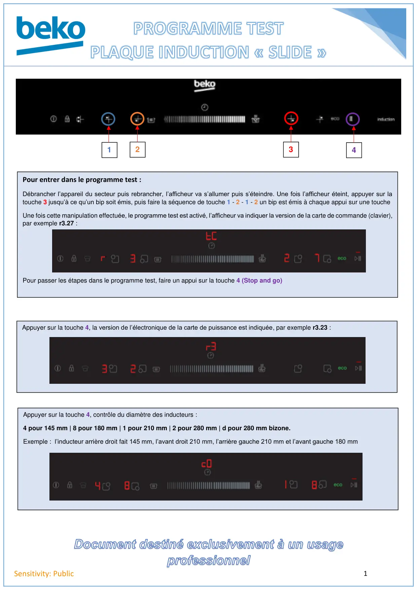
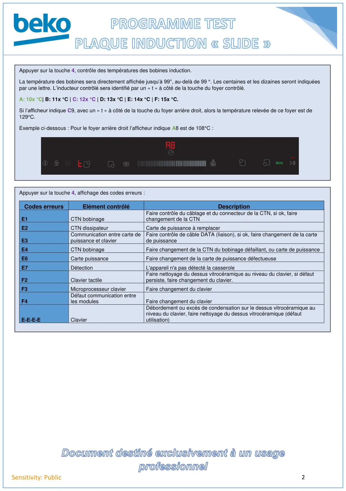

Programme test HII64500 (slide)

1Sensitivity: Public123Pour entrer dans le programme test :Débrancher l’appareil du secteur puis rebrancher, l’afficheur va s’allumer puis s’éteindre. Une fois l’afficheur éteint, appuyer sur latouche 3 jusqu’à ce qu’un bip soit émis, puis faire la séquence de touche 1 - 2 - 1 - 2 un bip est émis à chaque appui sur une toucheUne fois cette manipulation effectuée, le programme test est activé, l’afficheur va indiquer la version de la carte de commande (clavier),par exemple r3.27 :Pour passer les étapes dans le programme test, faire un appui sur la touche 4 (Stop and go)4Appuyer sur la touche 4, la version de l’électronique de la carte de puissance est indiquée, par exemple r3.23 :Appuyer sur la touche 4, contrôle du diamètre des inducteurs :4 pour 145 mm | 8 pour 180 mm | 1 pour 210 mm | 2 pour 280 mm | d pour 280 mm bizone.Exemple : l’inducteur arrière droit fait 145 mm, l’avant droit 210 mm, l’arrière gauche 210 mm et l’avant gauche 180 mm
1 / 2
2Sensitivity: PublicAppuyer sur la touche 4, contrôle des températures des bobines induction.La température des bobines sera directement affichée jusqu’à 99°, au-delà de 99 °. Les centaines et les dizaines seront indiquéespar une lettre. L’inducteur contrôlé sera identifié par un « t » à côté de la touche du foyer contrôlé.A: 10x °C| B: 11x °C | C: 12x °C | D: 13x °C | E: 14x °C | F: 15x °C.Si l’afficheur indique C9, avec un « t » à côté de la touche du foyer arrière droit, alors la température relevée de ce foyer est de129°C.Exemple ci-dessous : Pour le foyer arrière droit l’afficheur indique A8 est de 108°C :Appuyer sur la touche 4, affichage des codes erreurs :Codes erreursElément contrôléDescriptionE1CTN bobinageFaire contrôle du câblage et du connecteur de la CTN, si ok, fairechangement de la CTNE2CTN dissipateurCarte de puissance à remplacerE3Communication entre carte depuissance et clavierFaire contrôle de câble DATA (liaison), si ok, faire changement de la cartede puissanceE4CTN bobinageFaire changement de la CTN du bobinage défaillant, ou carte de puissanceE6Carte puissanceFaire changement de la carte de puissance défectueuseE7DétectionL'appareil n'a pas détecté la casseroleF2Clavier tactileFaire nettoyage du dessus vitrocéramique au niveau du clavier, si défautpersiste, faire changement du clavier.F3Microprocesseur clavierFaire changement du clavierF4Défaut communication entreles modulesFaire changement du clavierE-E-E-EClavierDébordement ou excès de condensation sur le dessus vitrocéramique auniveau du clavier, faire nettoyage du dessus vitrocéramique (défaututilisation)
2 / 2